再生時間：00:00:00
キーワード：
▲すべての画像はクリックで拡大します。
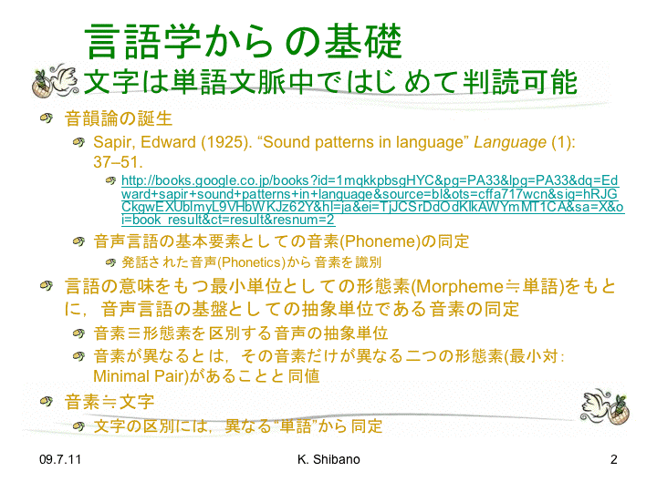
言語学からの基礎 文字は単語文脈中ではじめて判読可能
再生時間：00:02:50
キーワード：エドワード・サピア、"Sound patterns in language"、音素（フォニーム）、音韻論、形態素
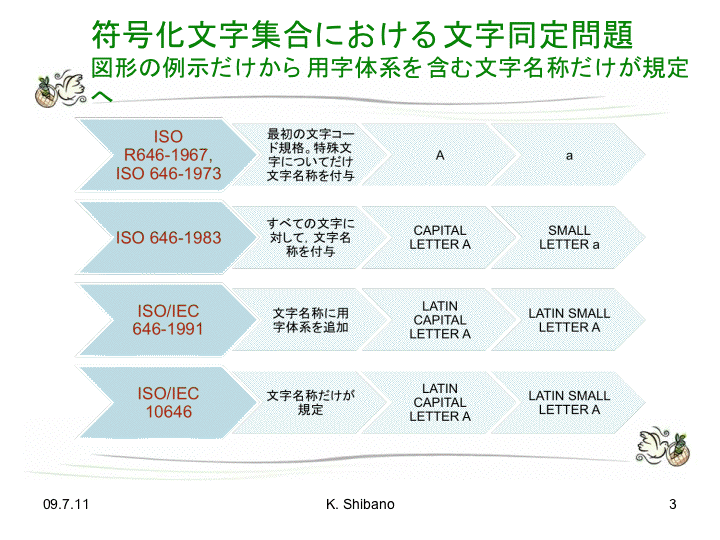
符号化文字集合における文字同定問題 図形の例示だけから用字大系を含む文字名称だけが規定へ
再生時間：00:10:30
キーワード：ISO R 646、ISO/IEC 646:1991、ISO/IEC 10646、JIS X 0201
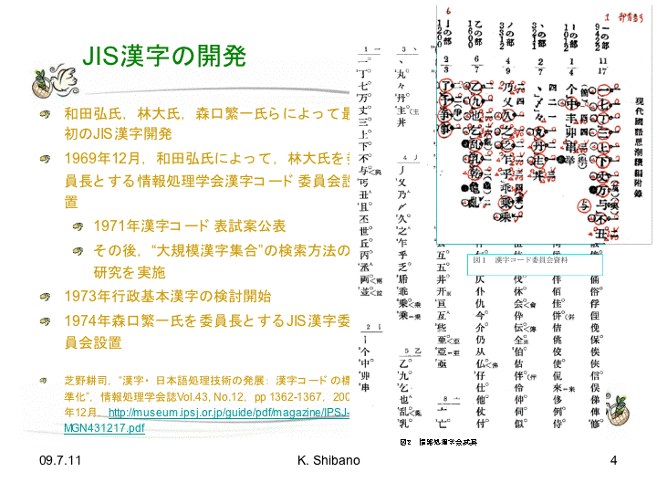
JIS漢字の開発
再生時間：00:25:43
キーワード：和田弘、林大、森口繁一、芝野耕司「漢字コードの標準化」
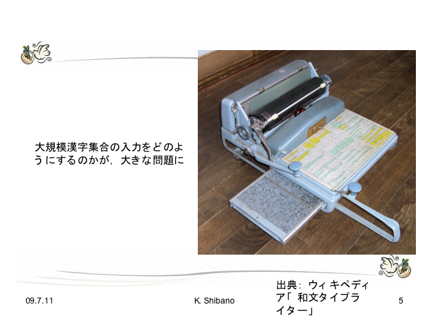
和文タイプライター
再生時間：00:33:34
キーワード：和文タイプライター、ウィリアム・ギャンブル、本木昌造
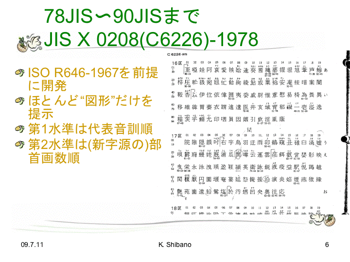
78JIS〜90JISまで JIS X 0208(C6226)-1978
再生時間：00:35:51
キーワード：王壬※［庭−广−廴］包摂《おうじんていほうせつ》、葛飾区、康熙字典体、新字源、異体字、親字
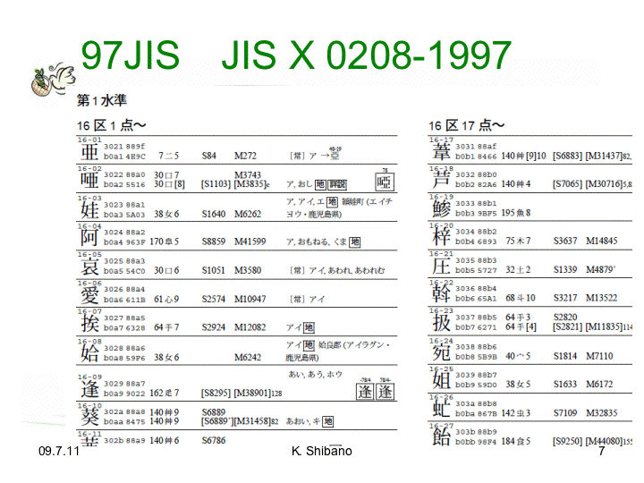
97JIS JIS X 0208-1997
再生時間：00:44:42
キーワード：新字源漢字番号、諸橋（大漢和辞典）番号、CJK UNIFIED IDEOGRAPH-XXXX
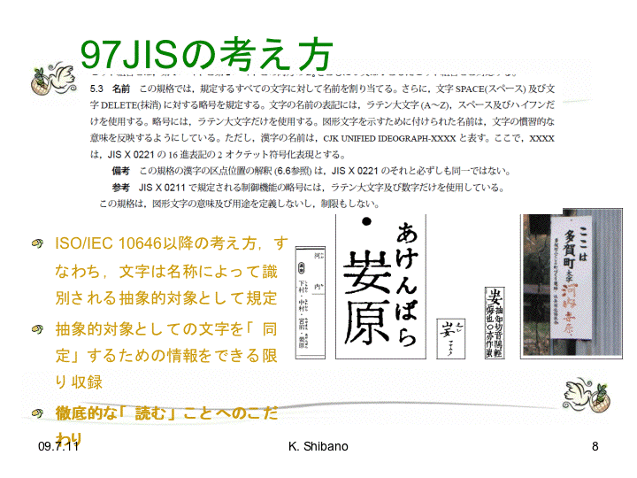
97JISの考え方
再生時間：00:45:40
キーワード：名前だけが規定、形は参考、「妛原《あけんばら》」
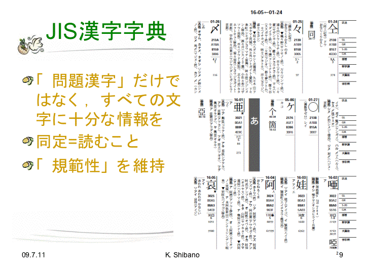
JIS漢字字典
再生時間：00:53:33
キーワード：ダイレクト・プレート、規範性、変体少女文字
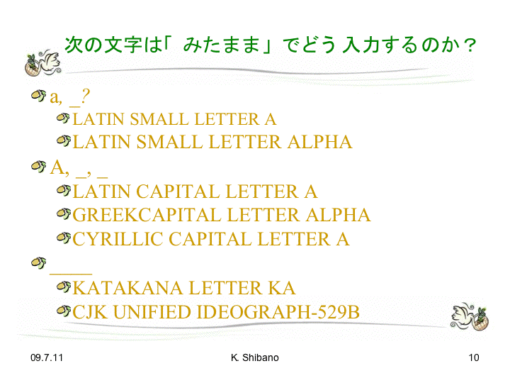
次の文字は「みたまま」でどう入力するのか？
再生時間：00:57:00
キーワード：「LATIN SMALL LETTER A」「LATIN SMALL LETTER ALPHA」、ラテン「Ａ」ギリシア「Α」キリール「А」、片仮名「カ」漢字「力」
▲LATIN SMALL LETTER ALPHAが文字化けしています。ＡΑАの後ろ二つと、「カ」「力」が表示されていません。
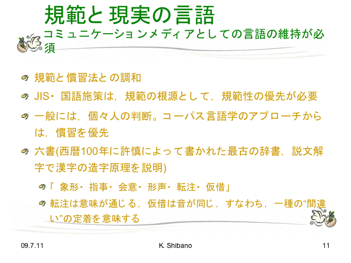
規範と現実の言語 コミュニケーションメディアとしての言語の維持が必須
再生時間：01:00:25
キーワード：規範性、慣習法、説文解字、六書、象形・指事・会意・形声・転注・仮借、一所懸命、一生懸命
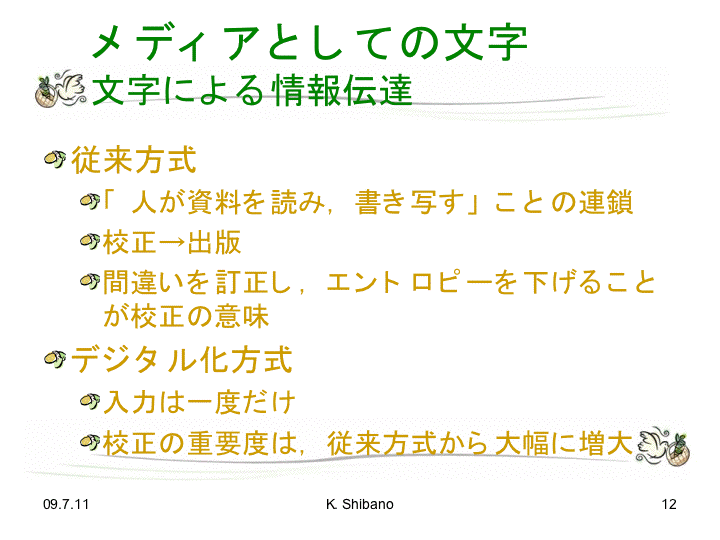
メディアとしての文字 文字による情報伝達
再生時間：01:04:40
キーワード：安岡孝一、筆耕室
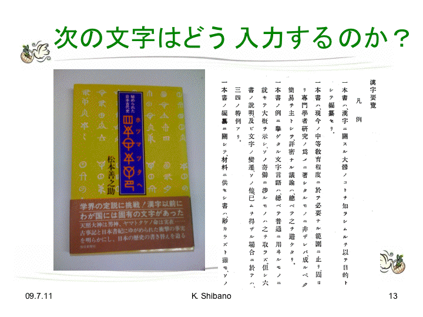
次の文字はどう入力するのか？
再生時間：01:08:56
キーワード：神代文字、「ホツマツタヘ 」、松本善之助、忍者文字

ヶケ
再生時間：01:11:32
キーワード：
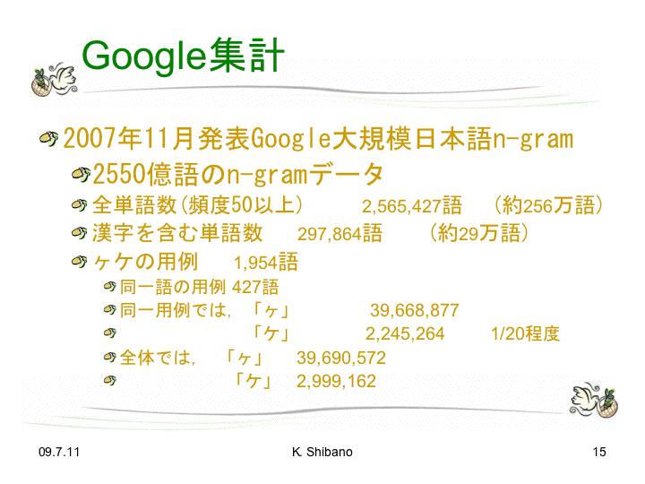
Google集計
再生時間：01:12:09
キーワード：Google大規模日本語n-gram、MeCab、形態素解析
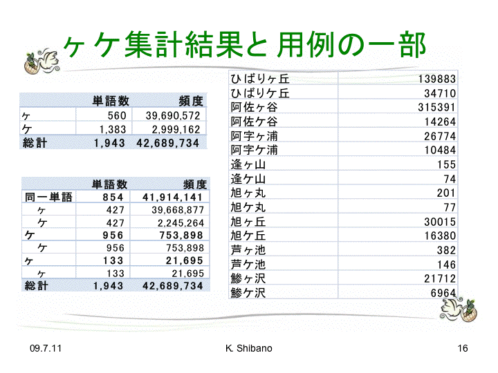
ヶケ集計結果と用例の一部
再生時間：01:14:39
キーワード：「ケヶ問題」、「龍ケ崎市」、高麗大蔵経

結論
再生時間：01:28:50
キーワード：
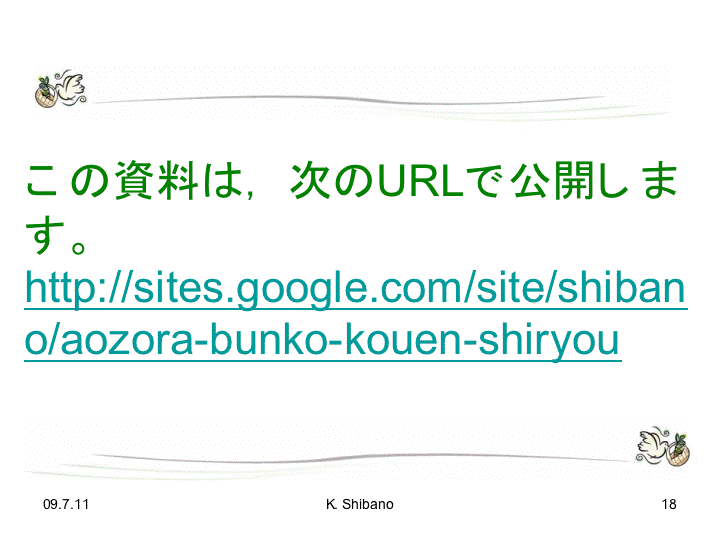
再生時間：00:00:00
キーワード：http://sites.google.com/site/shibano/aozora-bunko-kouen-shiryou